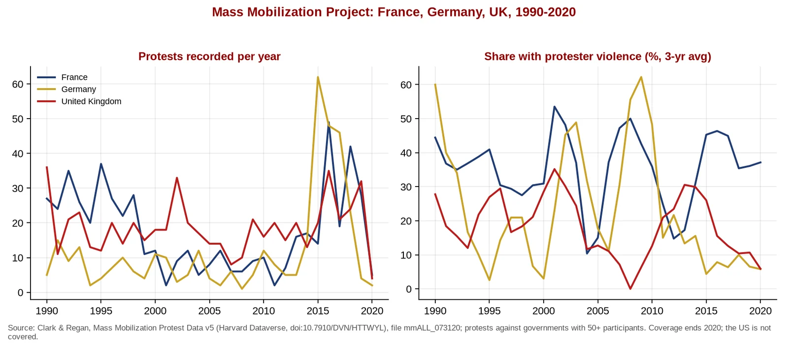
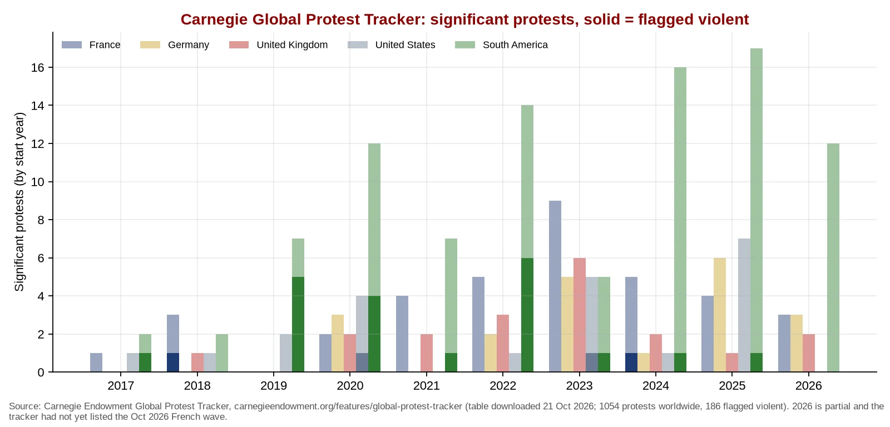

Q4. Long-Run Context: France Is the Outlier on Protest Violence

Graph 8. Anti-government protests (50+ participants) and the share involving protester violence, France vs Germany vs UK, 1990-2020. Over 1990-2020, 35% of coded French protests involved protester violence, vs 19% in the UK and 14% in Germany; for 2015-2020 the shares were 39%, 10% and 8%. Source: Clark & Regan, Mass Mobilization Protest Data (Mass Mobilization Project (Harvard Dataverse)). Coverage ends in 2020; the US is not covered.

Graph 9. "Significant" anti-government protests in the Carnegie Global Protest Tracker, by country or region. France 36 (2 flagged violent), Germany 20 (0), UK 19 (0), US 22 (2), South America 94 (20); 1,054 protests worldwide, 186 flagged violent. Source: Carnegie Global Protest Tracker (table downloaded Oct 21, 2026). The tracker had not yet added the October 2026 French wave.